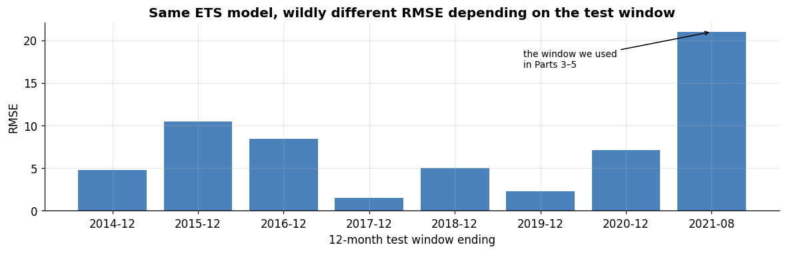
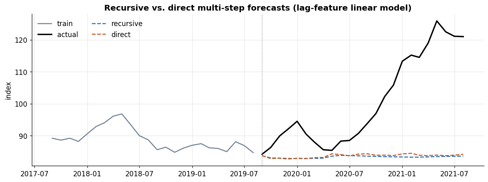

Series:Time Series Analysis in Python — from Statistical Modeling to Machine Learning
For five parts we have quietly leaned on a single train/test split — the last 24 months — and every time the story was the same: nothing beat the drift baseline. This part reveals why that verdict was unreliable, and builds the rigorous evaluation machinery every later part depends on. It is the least glamorous and most important notebook in the series: a model is only as trustworthy as the procedure used to score it.
What you will learn
Why a single split is fragile, and the discipline that fixes it
The baselines you must always beat, and why they anchor good metrics
The full metric zoo — MAE, RMSE, MAPE, sMAPE, MASE, and pinball loss
Time-series cross-validation — expanding vs. sliding windows, walk-forward backtesting
Leakage traps that silently invalidate results
Multi-step strategies — recursive, direct, DirRec — the bridge to the ML parts
Dataset & continuity
Still monthly_price.csv (356 months, 1992–2021), forecasting the Food Price Index. New libraries: scikit-learn (TimeSeriesSplit) and sktime.
0. Setup and a small stable of forecasters
To study evaluation, we need a few models to evaluate. We wrap five familiar forecasters from Parts 3–4 as simple functions f(train, h) -> array so we can score them uniformly.
The score from one train/test split is a sample of size one. Time series are non-stationary, so which window you test on can dominate the result. To show how severe this is, we score the same ETS model on several different 12-month windows.
fig, ax = plt.subplots(figsize=(11, 3.6))ax.bar(frag["window ends"], frag["ETS RMSE"], color=PALETTE[0], alpha=0.85)ax.set_title("Same ETS model, wildly different RMSE depending on the test window")ax.set_ylabel("RMSE"); ax.set_xlabel("12-month test window ending")worst = frag.loc[frag["ETS RMSE"].idxmax()]ax.annotate("the window we used\nin Parts 3–5", xy=(len(frag)-1, worst["ETS RMSE"]), xytext=(len(frag)-3.2, worst["ETS RMSE"]*0.8), arrowprops=dict(arrowstyle="->", color="black"), fontsize=9)plt.tight_layout(); plt.show()

The identical model swings from an RMSE around 1.5 on a calm window to roughly 21 on the 2020–21 window — an order-of-magnitude difference driven entirely by when we tested. Parts 3–5 happened to use the hardest window on the whole record, which is exactly why every model there looked barely better than naive. No single split can be trusted; we need to average performance over many windows. That is cross-validation for time series.
2. Baselines — the hurdle every model must clear
Before metrics and CV, fix the reference points. A forecast’s number means nothing in isolation; it only matters relative to something trivial:
Naive — repeat the last value (“no change”).
Seasonal naive — repeat the value from one season (12 months) ago.
Drift — extend the straight line from first to last training point.
Mean — the historical average (rarely competitive, but a floor).
If a complex model can’t beat these, it has not earned its complexity — and, as we’ll see, the best baseline also becomes the denominator of the most useful metric (MASE). Baselines aren’t a formality; they are the measuring stick.
3. The metric zoo
No single number captures forecast quality. Each metric answers a different question and has different failure modes. We implement them from scratch.
Both are in the units of the series, so they’re intuitive but can’t be compared across series of different scale. RMSE penalizes large errors more (it squares them), so it’s the choice when big misses are especially costly; MAE is more robust to outliers.
MAPE is scale-free (a %), which aids comparison — but it is undefined at y=0, explodes for small y, and is asymmetric: because it divides by the actual, an under-forecast can cost at most 100% (forecast down to zero) while an over-forecast is unbounded, so MAPE-optimal forecasts are biased low. sMAPE symmetrizes the denominator and is bounded on both sides, though it has quirks of its own.
def mape(a, p): a,p=np.asarray(a),np.asarray(p);return100*np.mean(np.abs((a-p)/a))def smape(a, p): a,p=np.asarray(a),np.asarray(p);return100*np.mean(np.abs(a-p)/((np.abs(a)+np.abs(p))/2))# MAPE's real asymmetry: it divides by the ACTUAL, so under-forecasting is capped# at 100% (forecast down to 0) while over-forecasting is unbounded.print("actual = 100, vary the forecast:")for fc in [0, 50, 80, 120, 200, 300]:print(f" forecast = {fc:3d}: MAPE = {mape([100],[fc]):3.0f}% "f"sMAPE = {smape([100],[fc]):3.0f}%")print("\nUnder-forecasting to 0 tops out at MAPE 100%, but a 3× over-forecast is 200%.")print("That asymmetry quietly biases MAPE-optimal forecasts LOW; sMAPE bounds both sides.")# scale sensitivity: the SAME absolute error costs more on a small actualprint("\nSame absolute error of 20, different actual levels:")for a in [40, 100, 200]:print(f" actual = {a:3d}, error 20: MAPE = {mape([a],[a-20]):.0f}%")
actual = 100, vary the forecast:
forecast = 0: MAPE = 100% sMAPE = 200%
forecast = 50: MAPE = 50% sMAPE = 67%
forecast = 80: MAPE = 20% sMAPE = 22%
forecast = 120: MAPE = 20% sMAPE = 18%
forecast = 200: MAPE = 100% sMAPE = 67%
forecast = 300: MAPE = 200% sMAPE = 100%
Under-forecasting to 0 tops out at MAPE 100%, but a 3× over-forecast is 200%.
That asymmetry quietly biases MAPE-optimal forecasts LOW; sMAPE bounds both sides.
Same absolute error of 20, different actual levels:
actual = 40, error 20: MAPE = 50%
actual = 100, error 20: MAPE = 20%
actual = 200, error 20: MAPE = 10%
3.3 The recommended default: MASE
MASE (Mean Absolute Scaled Error) divides the model’s MAE by the MAE of a naive forecast computed in-sample — usually the seasonal-naive one-step error on the training data:
This makes it scale-free and interpretable: MASE < 1 means the model beats the naive benchmark; MASE > 1 means it’s worse. It’s defined everywhere (no divide-by-zero), comparable across series, and is the metric Hyndman recommends as a default.
3.4 Probabilistic forecasts: pinball (quantile) loss
Point metrics ignore uncertainty. The pinball loss scores a quantile forecast \(\hat q_\tau\) against the outcome, penalizing under- and over-prediction asymmetrically according to the target quantile τ:
Averaged over several quantiles it rewards well-calibrated intervals, not just a good centre — the right metric when the whole predictive distribution matters (risk, inventory, capacity).
def pinball(actual, q_pred, tau): actual, q_pred = np.asarray(actual), np.asarray(q_pred) diff = actual - q_predreturn np.mean(np.maximum(tau * diff, (tau -1) * diff))# quantile forecasts from ARIMA's normal predictive distribution on one windowcut =len(y); tr, te = y.iloc[:cut-h], y.iloc[cut-h:cut]res = ARIMA(tr, order=(1,1,0)).fit().get_forecast(h)mean, se = res.predicted_mean.values, res.se_mean.valuesfrom scipy.stats import normtaus = [0.1, 0.5, 0.9]pin = {f"τ={t}": round(pinball(te.values, mean + norm.ppf(t)*se, t), 3) for t in taus}print("Pinball loss by quantile (ARIMA, last 12 months):", pin)print("Average pinball loss:", round(np.mean(list(pin.values())), 3))
Pinball loss by quantile (ARIMA, last 12 months): {'τ=0.1': np.float64(3.18), 'τ=0.5': np.float64(10.17), 'τ=0.9': np.float64(8.101)}
Average pinball loss: 7.15
3.5 Metrics side by side
Computed on one window, the metrics can even disagree on the ranking — a reason to pick your metric deliberately, ideally MASE for cross-series comparability plus a probabilistic score when intervals matter.
The fix for the single-split problem: evaluate over many train/test folds that always respect time order — train on the past, test on the future, slide forward, repeat. This is walk-forward validation (a.k.a. backtesting). Two flavours:
Expanding window — the training set grows with each fold (uses all history). sklearn’s TimeSeriesSplit does this.
Sliding window — the training set is a fixed-length block that moves forward (adapts to regime change, caps training cost).
Never shuffle: every test index must come after its training indices.
In the expanding diagram the blue training bar lengthens each fold; in the sliding diagram it stays a fixed width and marches right. Now the payoff: run a proper backtest and aggregate each model’s error across all folds, giving a mean and a spread instead of one fragile number.
def backtest(forecasters, y, n_splits=6, h=12, m=12): tscv = TimeSeriesSplit(n_splits=n_splits, test_size=h) acc = {name: {"RMSE": [], "MASE": []} for name in forecasters}for tri, tei in tscv.split(y): tr, te = y.iloc[tri], y.iloc[tei]for name, fn in forecasters.items(): fc = fn(tr, h) acc[name]["RMSE"].append(rmse(te, fc)) acc[name]["MASE"].append(mase(te, fc, tr, m)) out = []for name, d in acc.items(): out.append({"model": name,"RMSE_mean": round(np.mean(d["RMSE"]), 2),"RMSE_std": round(np.std(d["RMSE"]), 2),"MASE_mean": round(np.mean(d["MASE"]), 3)})return pd.DataFrame(out).sort_values("MASE_mean").reset_index(drop=True)board = backtest(FORECASTERS, y, n_splits=6, h=12)board
model
RMSE_mean
RMSE_std
MASE_mean
0
Drift
6.97
7.39
0.692
1
Naive
7.14
7.71
0.705
2
ARIMA
7.75
7.12
0.773
3
ETS
8.32
6.44
0.825
4
SeasonalNaive
9.36
7.96
0.939
Read this against the single-split verdict from Parts 3–5. Over six folds:
Every model’s MASE < 1, so all of them beat the in-sample seasonal-naive benchmark on average — a far kinder picture than the one unlucky 2020–21 window suggested.
Drift still leads, but ETS and ARIMA are now clearly competitive, not the also-rans they appeared to be. The single split had defamed them.
The RMSE spread (RMSE_std) is large — confirming numerically that any one fold could have told a very different story.
This is the whole lesson of Part 6: the procedure changed the conclusion without changing a single model.
5. Leakage traps — how good scores go wrong
Cross-validation only protects you if no information flows from the future (or the test set) into training. Leakage produces scores that look great and collapse in production. The time-series-specific traps:
Shuffling / random k-fold — puts future rows in the training set. Always forbidden for temporal data.
Features that peek forward — centered rolling windows, or any feature computed with values at or after the prediction time.
Preprocessing fit on all data — scalers, imputers, feature selection, or target encoders fit before the split see the test set. Fit them inside each fold, on training data only.
Lookahead in tuning — choosing hyperparameters on the same data you report.
No gap — when features use a k-length window, leave a purge/embargo gap so train and test don’t overlap through the feature.
We demonstrate trap #2 concretely — the same model, honest vs. leaky features.
# honest: trailing rolling mean (ends at t-1). leaky: centered mean (includes t & future)lags = pd.concat([y.shift(k) for k inrange(1, 4)], axis=1); lags.columns = ["lag1","lag2","lag3"]trailing = y.shift(1).rolling(6).mean().rename("trailing_ma")centered = y.rolling(7, center=True).mean().rename("centered_ma") # LEAKS the futuredef ts_cv_rmse(Xcols): dat = pd.concat([Xcols, y.rename("y")], axis=1).dropna() X, yy = dat.iloc[:, :-1], dat["y"] errs = [rmse(yy.iloc[te], LinearRegression().fit(X.iloc[tr], yy.iloc[tr]).predict(X.iloc[te]))for tr, te in TimeSeriesSplit(n_splits=5).split(X)]return np.mean(errs)honest = ts_cv_rmse(pd.concat([lags, trailing], axis=1))leaky = ts_cv_rmse(pd.concat([lags, centered], axis=1))print(f"Honest features (trailing MA): CV RMSE = {honest:.3f}")print(f"Leaky features (centered MA): CV RMSE = {leaky:.3f}")print(f"=> leakage makes the model look {honest/leaky:.1f}× better than it really is")
Honest features (trailing MA): CV RMSE = 2.497
Leaky features (centered MA): CV RMSE = 1.566
=> leakage makes the model look 1.6× better than it really is
A centered moving average quietly folds each month’s own value (and its neighbours) into the feature, so the model “predicts” what it has effectively already seen — CV RMSE drops by a third, an illusion that would evaporate the moment the model met genuinely future data it can’t peek at. The fix is trivial (use only trailing windows) but the bug is invisible unless you look for it.
A note on shuffling. For purely backward-looking lag features the numeric penalty from random k-fold can be small (each row still only sees its own past), which lulls people into thinking it’s fine. It is not: the moment a feature or a preprocessing step carries cross-sectional information, random folds leak heavily. Use TimeSeriesSplit, never KFold(shuffle=True), on temporal data — full stop.
6. Multi-step forecasting strategies
We’ve been forecasting 12–24 steps at once. How a model produces a multi-step path matters, especially for the ML models of Part 7 that natively predict only one step. Three strategies:
Recursive (iterated) — train one 1-step model; feed each prediction back in as an input to predict the next step. Simple and data-efficient, but errors compound as predictions feed on predictions.
Direct — train a separate model for each horizon h (predict \(y_{t+h}\) directly from time-t features). No error accumulation, but you fit h models and ignore dependencies between horizons.
DirRec — a hybrid: a model per horizon, but each is allowed to use the previous horizons’ predictions as extra inputs.
We contrast recursive vs. direct with a simple lag-feature linear model over a 24-month horizon.
h_test =24tr, te = y.iloc[:-h_test], y.iloc[-h_test:]nlags =12# recursive: one 1-step model, iterateXr = pd.concat([tr.shift(k) for k inrange(1, nlags+1)], axis=1).dropna()Xr.columns = [f"lag{k}"for k inrange(1, nlags+1)]one_step = LinearRegression().fit(Xr, tr.loc[Xr.index])hist, rec =list(tr.values), []for _ inrange(h_test): feat = np.array(hist[-nlags:][::-1]).reshape(1, -1) p = one_step.predict(feat)[0]; rec.append(p); hist.append(p)# direct: one model per horizondirect = []for hz inrange(1, h_test+1): Xd = pd.concat([tr.shift(k) for k inrange(nlags)], axis=1); Xd.columns=[f"l{k}"for k inrange(nlags)] yd = tr.shift(-hz) d = pd.concat([Xd, yd.rename("y")], axis=1).dropna() md_ = LinearRegression().fit(d.iloc[:, :-1], d["y"]) direct.append(md_.predict(tr.iloc[-nlags:].values[::-1].reshape(1, -1))[0])print(f"Recursive strategy: RMSE = {rmse(te, rec):.2f}")print(f"Direct strategy: RMSE = {rmse(te, direct):.2f}")fig, ax = plt.subplots(figsize=(11, 4.2))ax.plot(tr.index[-24:], tr.iloc[-24:], color=PALETTE[5], label="train")ax.plot(te.index, te, color="black", lw=2.2, label="actual")ax.plot(te.index, rec, color=PALETTE[0], ls="--", label="recursive")ax.plot(te.index, direct, color=PALETTE[1], ls="--", label="direct")ax.axvline(te.index[0], color="grey", lw=1, ls=":")ax.set_title("Recursive vs. direct multi-step forecasts (lag-feature linear model)")ax.set_ylabel("index"); ax.legend(frameon=False, ncol=2)plt.tight_layout(); plt.show()
Recursive strategy: RMSE = 22.27
Direct strategy: RMSE = 21.89

On this hard window the two are close, with direct slightly ahead — typical when the horizon is long enough that recursive error-compounding starts to bite. There’s no universal winner: recursive is simpler and often excellent at short horizons; direct is safer at long ones but costs h models. These strategies are exactly how we’ll turn the regressors of Part 7 into forecasters.
7. Doing this with sktime
Rolling your own backtest (as above) is the best way to understand it; for production, sktime provides tested splitters, metrics, and a unified forecaster API so you don’t re-implement the loop. Its evaluate runs a walk-forward backtest in one call.
sktime also offers ForecastingGridSearchCV (tune within the backtest, no leakage), a large library of forecasters under one interface, and probabilistic scoring — worth adopting once the concepts above are second nature.
8. Exercises
Fragility elsewhere. Repeat the Section 1 window sweep for Rice_Price. Is the single-split score as unstable as for the Food Price Index?
Metric disagreement. Find a forecaster and window where MAE and RMSE rank two models in opposite order. What does that tell you about the errors?
Sliding vs expanding. Re-run the backtest with a fixed max_train_size (sliding). Does limiting history help or hurt on this series?
Purge/embargo. With a 6-month rolling feature, add a 6-month gap between train and test in each fold. Does the honest score change?
Direct vs recursive. Compare the two strategies at h = 1, 3, 6, 12, 24. At what horizon does direct overtake recursive here?
# --- Solution to Exercise 5 (setup) ---def strat_rmse(h_test): tr, te = y.iloc[:-h_test], y.iloc[-h_test:] Xr = pd.concat([tr.shift(k) for k inrange(1, 13)], axis=1).dropna() om = LinearRegression().fit(Xr, tr.loc[Xr.index]) hist, rec =list(tr.values), []for _ inrange(h_test): rec.append(om.predict(np.array(hist[-12:][::-1]).reshape(1,-1))[0]); hist.append(rec[-1]) Xd = pd.concat([tr.shift(k) for k inrange(12)], axis=1) dd = pd.concat([Xd, tr.shift(-h_test).rename("y")], axis=1).dropna() dm = LinearRegression().fit(dd.iloc[:, :-1], dd["y"]) direct_h = dm.predict(tr.iloc[-12:].values[::-1].reshape(1,-1))[0]returnround(rmse(te, rec),2), round(abs(te.iloc[-1]-direct_h),2)for hz in [1, 3, 6, 12, 24]: r, d = strat_rmse(hz);print(f"h={hz:2d}: recursive RMSE={r:6.2f} | direct |err@h|={d:6.2f}")
h= 1: recursive RMSE= 0.97 | direct |err@h|= 0.97
h= 3: recursive RMSE= 7.51 | direct |err@h|= 7.77
h= 6: recursive RMSE= 7.79 | direct |err@h|= 10.18
h=12: recursive RMSE= 22.28 | direct |err@h|= 27.02
h=24: recursive RMSE= 22.27 | direct |err@h|= 36.83
9. Key takeaways
A single train/test split is a sample of size one; on non-stationary data the score can swing by 10× depending on the window. Never conclude from one split.
Baselines (naive, seasonal-naive, drift) are the hurdle and the anchor — the seasonal-naive error is the denominator of MASE.
Choose metrics deliberately: MAE/RMSE (scale-dependent), MAPE/sMAPE (percentage, with asymmetry/zero pitfalls), MASE (scale-free, interpretable, the recommended default), and pinball loss for probabilistic forecasts.
Walk-forward cross-validation (expanding or sliding windows) turns one fragile number into a distribution — and here it reversed the Parts 3–5 verdict, showing ETS/ARIMA were competitive all along.
Guard against leakage: no shuffling, no forward-peeking features, fit preprocessing inside folds, and purge/embargo around windowed features.
Recursive vs. direct vs. DirRec are the multi-step strategies that turn any one-step regressor into a forecaster — the hinge to the machine-learning parts.
What’s next — Part 7: Feature Engineering & the ML Reduction
With rigorous evaluation in hand, Part 7 reframes forecasting as supervised learning: turning a series into a feature matrix (lags, rolling stats, calendar and Fourier terms, exogenous variables), so that any regressor — and then the gradient-boosting and deep models of Parts 8–10 — can forecast, scored with the backtesting discipline established here.